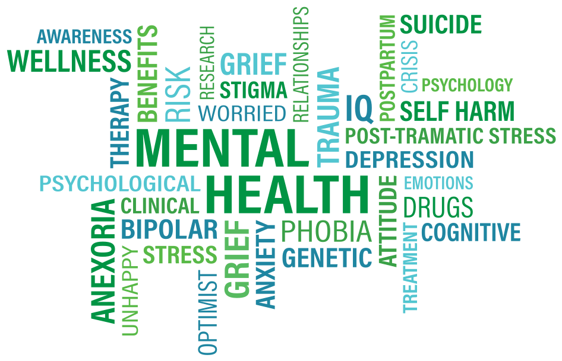

Mental health is something that affects all of us and those around us.
“Anything that’s human is mentionable, and anything that is mentionable can be more manageable. When we can talk about our feelings, they become less overwhelming, less upsetting, and less scary.” – Fred Rogers

I decided to do my Activist Toolkit on mental health because lots of people are less educated on the topic, why it's important, and how to maintain a good mental health.
Mental health is defined as: "The state of well-being in which an individual realizes his or her own abilities, can cope with the normal stresses of life, can work productively and is able to make a contribution to his or her community."
The effects of not taking care of your mental health can include depression, suicidal thoughts, and just a general loss of quality of life. There is a lot of stigma around the topic of mental health because many people believe that everyone should and can be strong mentally, and if they're not, are just weak. However, this is completely false. Everybody has their faults, and instead of pretending they don't exist, we should embrace them so we can fix them. That is why I created this website. We need to be open about mental health, because if we're not, more people will become part of statistics of high rates of mental illness among different communities and we don't want that.